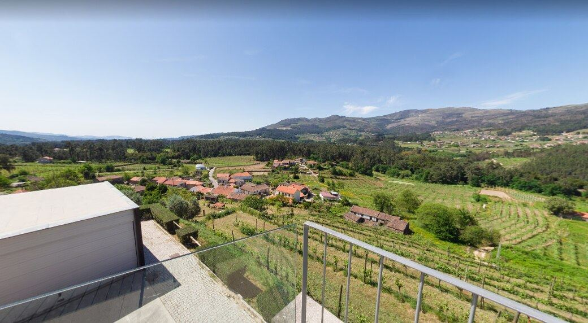

BLANCO
Bodega familiar de Melgaço, en la subregión de Monção e Melgaço, pionera en la elaboración de Alvarinho embotellado en la zona y referencia de esta variedad en Portugal.

Soalheiro nació en Melgaço, el municipio más septentrional de Portugal, junto al río Miño y frente a Galicia. En 1974 João António Cerdeira plantó allí un viñedo de Alvarinho en una ladera soleada, de donde procede el nombre de la casa, y en 1982 la familia lanzó su primer vino embotellado, uno de los primeros Alvarinho con marca propia de Melgaço. Hoy la bodega la dirigen sus hijos, que han ampliado la producción y la gama.
La casa trabaja con viñedos propios y con una red de pequeños viticultores de la zona, y ha adoptado prácticas de viticultura ecológica en buena parte de sus parcelas. La subregión de Monção e Melgaço, protegida por las montañas de la influencia atlántica más directa, es algo más cálida y seca que el resto del Vinho Verde, lo que permite a la Alvarinho alcanzar una buena madurez sin perder acidez.
El vino más conocido de la casa es el Soalheiro Alvarinho, un blanco aromático y fresco. Junto a él, Soalheiro elabora vinos de viñas más antiguas, como Primeiras Vinhas, versiones con crianza sobre lías o en barrica, espumosos y vinos que combinan la Alvarinho con otras variedades de la región, como la Loureiro. El estilo de la bodega busca expresar la pureza de la fruta, la mineralidad y la viva acidez de la Alvarinho cultivada en los suelos graníticos de Melgaço.
Sus vinos se consideran una referencia de la Alvarinho portuguesa y muestran cómo esta variedad puede evolucionar en botella durante varios años.